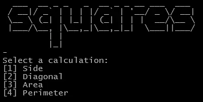
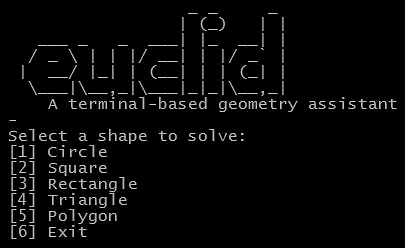

print("\033c", end="")
if shape == 1:
circleCalculator()
elif shape == 2:
squareCalculator()
elif shape == 3:
rectangleCalculator()
elif shape == 4:
triangleCalculator()
elif shape == 5:
polygonCalculator()
elif shape == 6:
print("\033c", end="")
return
after:
shape_options = {
1: circleCalculator,
2: squareCalculator,
3: rectangleCalculator,
4: triangleCalculator,
5: polygonCalculator
}
if shape == 6:
# execute's print("\033c", end="")
# to clear the terminal screen.
clearScreen()
return
if shape == 112512118:
masthead()
elif shape in shape_options:
shape_options[shape]()
As you can see, the updated code is much more maintainable. Using a function dictionary removes repetitive logic and makes adding new shapes easier in the future.

Euclid is a Python program that solves basic geometric calculations.
Currently, the main menu and circle menu are built, along with the "solve for area" flow, which handles input from radius, diameter, or circumference. Placeholders are in place for the remaining circle calculations (circumference, diameter, radius) as well as for the other shapes (square, rectangle, triangle, polygon). I'll be adding more soon, getting basic functionality down before I dive into looks. I also plan on make a GUI version with PySide6 in the future.
